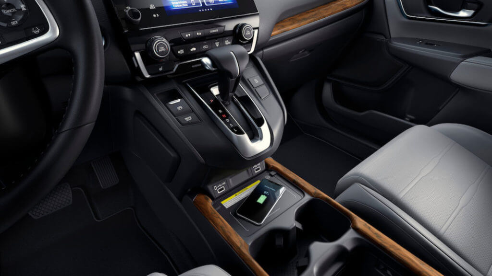
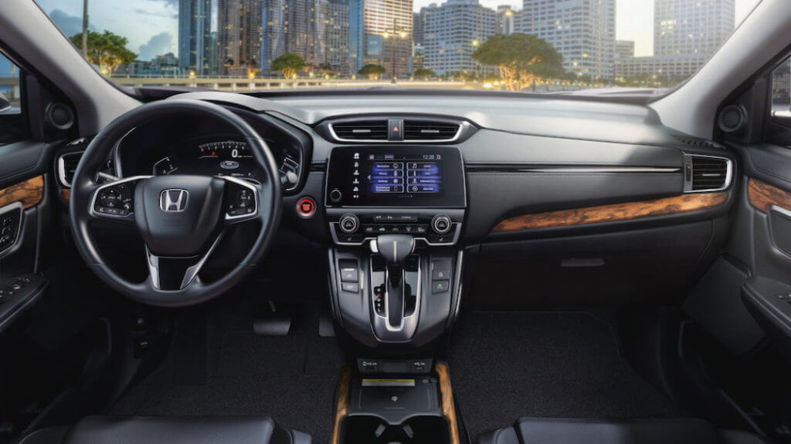
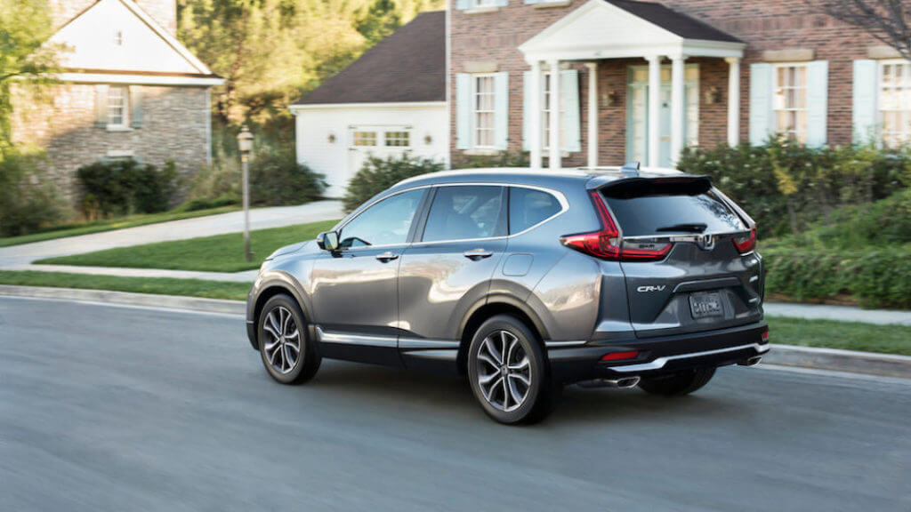

Якщо ви шукаєте маленький сімейний кросовер, варто буде розглянути Honda CR-V 2020 року. CR-V вражає своєю бездоганною округлістю. Економія палива, продуктивність, безпека, якість і вартість – ось головні переваги,в той час не можна ігнорувати бездоганну репутацію Honda за надійність.У 2020 році CR-V також отримає нову гібридну трансмісію, яка поєднуватиме економію палива і продуктивність.
Зміст
Що нового в Honda CR-V 2020 року
CR-V отримує своє перше серйозне оновлення з тих пір, як був повністю перероблений в 2017 році. Базова комплектація LX тепер поставляється в стандартній комплектації з 1,5-літровим турбонаддувом, раніше стандартним для всіх інших комплектацій – попередня базова 2,4-літрова більше не є. Інші новини трансмісії прибувають з нового Honda CR-V Hybrid 2020 року, який прибуде пізніше в модельному році.
Базовий LX тепер також отримує стандартну технологію запобігання нещасним випадкам, в той час як Touring отримує обігрівається кермо і бездротову зарядку смартфона. Кожен CR-V також отримує оновлений дизайн, включаючи затемнену радіаторну решітку і задні ліхтарі з темними тонами. Усередині центральна консоль була перероблена, щоб запропонувати ще більш гнучке сховище.
Інтер’єр і функціонал CR-V 2020
CR-V забезпечує стильну, хоча і нудну естетику дизайну, підкріплену матеріалами вище середнього, і конструкцію збірки для цього сегмента. Якщо ви є попереднім власником CR-V, ви помітите, що ця остання версія відрізняється більш високою якістю і більш преміальної середовищем, ніж попередні моделі. Якщо ви цього не зробите, ви як і раніше знайдете одну з найгарніших кабінок з точки зору якості, а також одну з найбільш функціональних, оскільки вона має ряд розумних рішень для зберігання в центральній консолі.
У комплектації EX CR-V стандартно поставляється з великою кількістю технологій за розумною ціною, що робить базову обробку LX трохи спірною. Ви отримуєте три USB-порту, Apple CarPlay, Android Auto, безліч інших додатків для інтеграції смартфонів і звукову систему з шістьма динаміками. Керувати ними можна за допомогою 7-дюймового сенсорного екрану, який не є найсильнішим елементом CR-V через сумнівні відповідей, відсутність фізичних кнопок меню і іноді заплутаною структури меню. Конкуруючі системи, особливо Subaru Forester, пропонують зіставні функції з більш зручним інтерфейсом.
Габарити
CR-V 2020 року – один з найбільших «компактних позашляховиків», по крайній мірі, зсередини, оскільки Honda, як правило, краще справляється з роботою, ніж велика частина максимально можливого використання внутрішнього простору. Хоча його загальна зовнішня довжина і ширина є середніми для сегмента, його пасажирське і вантажне простір краще, ніж майже у кожного конкурента. Відкидається заднє сидіння, розділене на 60/40, забезпечує справжнє простір і комфорт навіть для великих дорослих, в той час як автокрісло, звернене назад, повинно бути в стані поміститися в середньому положенні – навіть при високих пасажирів спереду. Запас місця в достатку, незалежно від місця для сидіння або наявності люка на даху.
За цим заднім сидінням знаходиться великий і універсальний вантажний відсік (від 37,6 до 39,2 кубічних футів) з одним з найнижчих, найбільш легко завантажуються вантажних поверхів в сегменті. Це гарна новина, якщо ви піднімаєте велику важку коляску або собака повинна стрибнути на борт. Складання заднього сидіння за допомогою двох дистанційних тяг в багажному відділенні показує максимальну місткість 75,8 кубічних футів. Це краще, ніж у більшості середньорозмірних позашляховиків, таких як Ford Edge, і краще, ніж у багатьох інших компактних позашляховиків. Тільки Subaru Forester без люка на даху трохи більше.
Які характеристики CR-V та яка економія палива
Кожна 2020 Honda CR-V прибуває стандарт з 1,5-літровим рядним чотирициліндровим двигуном з турбонаддувом, який виробляє 190 кінських сил і 179 фунтів-футів крутного моменту. Це в парі з безступінчатим трансмісією і стандартним переднім приводом, але повний привід не є обов’язковим. Прискорення і економія палива є одними з кращих в сегменті. Оцінки EPA – місто на 28 миль на галон, шосе на 34 милі на галон і 30 миль на галон, об’єднані з FWD, і місто на 27 миль на галон, шосе на 32 милі на галон і 29 миль на галон, об’єднаний з AWD.
Новий CR-V Hybrid буде поставлятися з тієї ж чудовою бензиново-електричною трансмісією, що і в Honda Accord Hybrid. Він складається з двох електродвигунів і двух літрового рядного 4,0-літрового двигуна, які разом виробляють 212 кінських сил, що робить Hybrid найпотужнішим CR-V. Оцінки економії палива EPA не були доступні на момент написання цієї статті, але Honda заявила, що очікує поліпшення на 50% в порівнянні зі звичайною оцінкою міста CR-V. Це буде означати 42 милі на галон, що можна порівняти з RAV4 Hybrid.
Водіння
Сьогоднішні диски CR-V відрізняються більшою вишуканістю і вишуканістю, ніж попередні версії. Це більш комфортно, менше шуму вітру і дороги, а низька потужність турбонаддува призводить до більш тихим і менш напруженим шумів при русі по місту. Ці спостереження в основному застосовні і до більшості конкурентів, і, дійсно, CR-V є одним з кращих компактних кросоверів для водіння.
Загалом, це тому, що CR-V добре заокруглений. Його рульове управління приємно зважено і надає достатню впевненість, але не робить парковку рутиною. Його керованість, звичайно, не сама чуйна або дорожня обійми в сегменті, але вона вселяє впевненість, не відволікаючись від комфортної їзди. Що стосується двигуна, то ця потужність на низьких оборотах від двигуна з турбонаддувом змушує CR-V відчувати себе сильним виконавцем на більш звичайних швидкостях в різних містах. Відкрийте його, і він почне видихатися, і ви помітите гудіння від варіатора.
Які функції доступні і яка ціна Honda CR-V
Ціни на Honda CR-V 2020 року починається з 26 145 доларів.
Зміст базових функцій в 2020 році значно збільшилася завдяки тому, що технологія запобігання нещасним
випадкам стала стандартною для всіх, а базовий LX добре оснащений базовими функціями. Проте, за
порівняно невелику премію в розмірі 2510 доларів США комплектація EX додає безліч корисного
устаткування: автоматичні фари, протитуманні фари, безконтактний вхід і запуск за допомогою кнопки,
заднє тоноване скло, люк на даху, кришка багажного відділення, двозонний автоматичний клімат- контроль,
восьмимісному сидіння водія з електроприводом, підігрів передніх сидінь, два USB-порту ззаду, звукова
система з шістьма динаміками і 7-дюймовий сенсорний екран з Apple CarPlay і Android Auto. (Базова
інформаційно-розважальна система в значній мірі є радіо-лицьову панель з великим дисплеєм.
Забезпечення безпеки і рейтинги аварійності
Кожна CR-V поставл яється в стандартній комплектації з технологією запобігання аварій «Honda Sensing», яка включає в себе попередження про зіткнення вперед, автоматичне екстрене гальмування, допомога в русі по смузі, попередження про мертвій зоні і задньому перехресті, а також монітор неуважність водія. Адаптивний круїз-контроль також включений, і фактично перевершує систему, описану в паспорті і пілота Honda.
CR-V отримав максимально можливу п’ятизірковий оцінку зіткнення від уряду за загальну, лобову і бічний захист від зіткнень. Страховий інститут безпеки дорожнього руху назвав його «Кращим вибором безпеки» за кращі оцінки захисту і запобігання ДТП. Його фари отримали різні оцінки в залежності від рівня обробки салону. Світлодіодні ліхтарі Touring отримали прийнятний бал, в той час як EX і EX-L отримали маргінал.